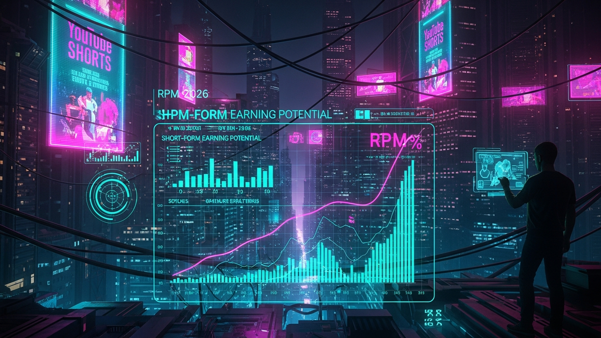

The digital content landscape has undergone a seismic shift with the rise of short-form video, transforming how audiences consume media and how creators earn a living. YouTube, a titan in the video-sharing world, entered the fray with YouTube Shorts, and in 2023, it introduced a robust monetization model, moving beyond the initial Shorts Fund to a revenue-sharing system akin to its long-form counterpart. This pivotal change sparked both excitement and skepticism among creators. As we peer into 2026, the burning question remains: will YouTube Shorts RPM (Revenue Per Mille, or per thousand views) evolve enough for creators to genuinely make a sustainable living solely from their short-form content? This article will meticulously dissect the projected trajectory of Shorts monetization, explore the critical factors influencing earnings, and outline the strategies and tools necessary for creators to thrive in an increasingly competitive and dynamic digital economy.
The journey of YouTube Shorts monetization has been a rapid and transformative one, commencing with the initial Shorts Fund in 2021, which offered fixed bonuses to top creators, and evolving dramatically into a more integrated revenue-sharing model in February 2023. This shift marked a critical turning point, as YouTube began to treat Shorts more like its long-form videos in terms of monetization potential for creators. The 2023 model introduced a 45% revenue share for creators, after a portion of ad revenue is allocated to cover music licensing costs. While this was a significant step forward, the initial RPMs for Shorts were often considerably lower than those for traditional long-form content, leading many creators to question its viability as a primary income stream.
Looking ahead to 2026, several factors are poised to contribute to a projected improvement in Shorts RPM. Firstly, YouTube's continuous efforts to refine its ad serving algorithms for short-form content will be paramount. The challenge with Shorts lies in their brevity; integrating effective, non-intrusive advertisements within 15-60 second clips requires sophisticated technology. By 2026, we anticipate more seamless ad placements, perhaps through innovative formats that better align with the rapid consumption pattern of Shorts viewers. This could include interstitial ads between Shorts in the feed, or even more contextually relevant, non-skippable micro-ads that feel less disruptive. Advertiser confidence and spend on short-form video are also on an upward trajectory. As brands increasingly recognize the massive reach and engagement potential of Shorts, their budgets allocated to this format are expected to grow substantially. This increased demand for ad inventory will naturally drive up CPMs (Cost Per Mille), which in turn, contributes to higher RPMs for creators.
Furthermore, YouTube's platform maturity and its vast audience will play a crucial role. With billions of users engaging with Shorts daily, the sheer volume of available ad impressions is immense. As YouTube gathers more data on viewer behavior within the Shorts ecosystem, it can offer more precise targeting options to advertisers, increasing the value of each ad view. We might also see the introduction of premium ad formats specifically designed for Shorts, offering higher CPMs for creators who meet certain content quality or audience engagement metrics. The platform is continuously experimenting, and by 2026, it is highly probable that YouTube will have rolled out several creator-centric incentives and monetization enhancements aimed at attracting and retaining top talent. This could include better analytics tools for Shorts, more transparent reporting on music licensing deductions, or even tiered RPM structures based on content type or creator engagement levels. The initial technical challenges of monetizing content that is consumed so rapidly and often in a continuous feed will have largely been overcome through advanced AI and machine learning, optimizing ad delivery to maximize both viewer experience and creator revenue. The evolution from a bonus-based fund to a more equitable ad revenue share model has set the foundation, and the next few years will focus on optimizing this system to unlock its full earning potential for the creator community.
Understanding YouTube Shorts RPM in 2026 requires a deep dive into its calculation and the myriad factors that will influence its value. RPM, or Revenue Per Mille (thousand), is essentially the total estimated earnings from all monetization sources (mostly ads) for every 1,000 monetized playbacks. For Shorts, this calculation is particularly intricate due to the shared revenue model for music licensing. YouTube pools all revenue from ads viewed in the Shorts Feed, allocates a portion for music licensing, and then distributes the remaining amount to creators based on their share of total Shorts views. This means your RPM is not just about your views, but also about the overall ad performance within the Shorts ecosystem and the music usage across all Shorts.
By 2026, several key factors will significantly influence a creator's Shorts RPM. Firstly, audience demographics and geography will remain paramount. Advertisers pay more to reach specific audiences, particularly those in developed countries with higher purchasing power (e.g., North America, Western Europe, Australia). If your audience is predominantly from these regions, your RPM will naturally be higher than if your views come primarily from regions with lower ad spend. Similarly, the age and interests of your viewers matter; niches with high-value audiences (e.g., finance, tech, luxury goods) tend to command higher CPMs. Secondly, ad formats and fill rates will evolve. As YouTube refines its ad technology for Shorts, the types of ads shown and how frequently they appear will impact revenue. A higher ad fill rate (the percentage of ad opportunities that are actually filled with an ad) directly translates to more revenue. We can expect more sophisticated ad formats that are less intrusive but highly effective, potentially including shoppable ads or interactive elements that boost advertiser ROI and thus CPMs.
Thirdly, the quality and brand safety of your content will be critical. Advertisers are increasingly cautious about where their ads appear. Content that is deemed brand-safe, aligns with community guidelines, and provides genuine value or entertainment is more likely to attract premium advertisers. Conversely, controversial or low-quality content may see lower RPMs due to limited ad placement opportunities. Fourthly, viewer engagement and watch time, even for short-form content, play a subtle but important role. While Shorts are designed for quick consumption, if viewers consistently watch your Shorts to completion or re-watch them, it signals higher engagement to YouTube's algorithms. This can indirectly influence ad targeting and the perceived value of your content, potentially leading to better ad placements and thus higher RPMs. Finally, the broader macroeconomic climate will always have an impact. During economic downturns, advertising budgets often shrink, leading to lower CPMs across the board. Conversely, robust economic periods tend to see increased ad spend. By 2026, we can anticipate a more stable and mature Shorts ad market, but these external economic factors will always be a consideration. While direct comparisons to long-form RPMs might still show Shorts lagging, the gap is expected to narrow significantly, with successful, niche-focused Shorts creators potentially seeing RPMs ranging from $0.05 to $0.50, depending on all the aforementioned variables, making it a more compelling, albeit still supplementary, income source.
While the projected improvements in YouTube Shorts RPM by 2026 offer a glimmer of hope, it is crucial for creators to understand that relying solely on ad revenue for a full-time living from short-form content will likely remain an uphill battle for the vast majority. The true path to financial sustainability and significant income generation lies in a multi-faceted approach, leveraging the immense reach and discovery power of Shorts to funnel audiences into diversified income streams. Shorts are exceptional at capturing attention, driving virality, and introducing new viewers to a creator's brand, making them a powerful top-of-funnel tool rather than an end-all monetization solution.
One of the most potent alternative income streams is brand deals and sponsorships. Shorts offer unique opportunities for product placement, quick reviews, challenges, and creative integrations that can resonate deeply with a highly engaged audience. Brands are increasingly allocating significant marketing budgets to short-form content creators because of the authentic connection they foster. By 2026, the market for Shorts-specific brand deals will be even more sophisticated, with platforms and agencies connecting creators to relevant brands. Creators must focus on building a strong, niche audience that aligns with particular product categories to attract premium partnerships. Effective negotiation and transparent disclosure will be key to long-term success in this area.
Affiliate marketing presents another lucrative avenue. Shorts creators can subtly recommend products or services they genuinely use and love, placing affiliate links in their video descriptions, pinned comments, or even directing viewers to a link-in-bio on their profile. This passive income stream can grow substantially as a creator's audience expands. The key is authenticity and providing value; overt sales pitches often backfire. Similarly, YouTube Shopping, with its direct product tagging features, is set to become an even more streamlined and effective monetization tool by 2026. Creators can tag products directly within their Shorts, allowing viewers to purchase with minimal friction, transforming impulse discovery into instant conversion.
Beyond these, creators can tap into direct audience support. While less common for purely short-form content, features like YouTube Channel Memberships, Super Thanks, and Super Chat (during live streams or Premieres) can provide a reliable income stream from dedicated fans. Promoting custom merchandise sales through Shorts is also highly effective. A quick shot of a creator wearing their branded hoodie or using a custom product can instantly drive interest and sales. Perhaps the most strategic diversification for many will be using Shorts as a powerful engine to cross-promote long-form content. Shorts can serve as teasers, highlights, or behind-the-scenes glimpses that pique viewer interest and drive them to longer, higher-RPM videos or even to external platforms like Patreon for exclusive content, online courses, or premium communities. This strategy leverages the strengths of both formats, with Shorts acting as the discovery engine and long-form content or external platforms serving as the primary monetization hubs. By 2026, creators who master this multi-channel, multi-revenue stream approach will be the ones truly making a sustainable living from their content creation efforts, showcasing the power of Shorts as a foundational element of a broader digital empire.
Turn your scripts into professional videos automatically. Use code PAVEL20 for 20% OFF!
START CREATING WITH PICTORYTo truly maximize YouTube Shorts RPM and overall channel growth by 2026, creators must adopt a strategic mindset, leveraging a combination of analytical insights, creative tools, and proven content strategies. The landscape of short-form video is fiercely competitive, and only those who are data-driven and agile in their content creation will stand out and effectively monetize their efforts.
At the core of any successful Shorts strategy lies robust analytics. YouTube Analytics is the primary and most indispensable tool. Creators must delve deep into Shorts-specific metrics such as audience retention graphs (identifying drop-off points), traffic sources (understanding how viewers discover your Shorts), content gaps (spotting what your audience is searching for but not finding), and geographic demographics. Understanding these metrics allows for iterative improvement, helping creators fine-tune their hooks, pacing, and calls-to-action. Beyond YouTube's native tools, third-party platforms like TubeBuddy and VidIQ will be invaluable. By 2026, these tools will likely offer even more sophisticated Shorts-specific features, including advanced keyword research for discovery, competitor analysis to identify trending formats, and AI-powered suggestions for titles, descriptions, and hashtags that enhance searchability and algorithmic reach. These tools help creators optimize their content for both human engagement and algorithmic favorability.
For content creation itself, a suite of efficient and powerful editing tools is non-negotiable. While YouTube's built-in editor offers basic functionalities, professional-grade results often require more. Mobile-first editing apps like CapCut will continue to dominate due to their user-friendly interface, vast array of effects, transitions, and trending audio libraries, making high-quality Shorts creation accessible on the go. For those preferring desktop, streamlined versions of professional software like Adobe Premiere Rush or even the free and powerful DaVinci Resolve offer more control. The integration of AI tools for script generation, video idea brainstorming, and even automated captioning will become more commonplace by 2026, significantly boosting creator efficiency. Access to high-quality, royalty-free music from the YouTube Audio Library or subscription services like Epidemic Sound is also critical for enhancing engagement without copyright issues.
In terms of monetization management, a thorough understanding of the YouTube Partner Program (YPP) dashboard is essential. Creators must regularly monitor their RPM, ad performance, and revenue breakdowns. For managing brand deals, platforms that connect creators with brands (e.g., CreatorIQ, or direct outreach tools) will be crucial for professionalizing partnerships. Strategically, creators should focus on niche selection and developing clear content pillars to build a dedicated audience. Optimizing the "hook" – the first 1-3 seconds of a Short – is paramount for retention. Clear, concise calls-to-action (e.g., "Subscribe for more," "Watch my long-form video," "Link in bio") are vital for driving viewers to other content or monetization avenues. Consistency in posting, leveraging trending sounds and topics, and actively engaging with comments and community features will all contribute to sustained growth. Finally, A/B testing different content formats, titles, and thumbnails will provide data-backed insights into what resonates best with your specific audience, ensuring that every piece of content is optimized for maximum reach and revenue potential.
By 2026, the creator economy will have matured significantly, with short-form video firmly entrenched as a dominant content format. However, this maturity also brings intensified competition and a greater emphasis on sustainability for creators. YouTube Shorts operates within a highly competitive ecosystem, directly vying for creator and viewer attention with giants like TikTok, Instagram Reels, and even Facebook Shorts. Each platform offers unique advantages and challenges, and creators will need to strategically navigate this multi-platform environment to maximize their reach and income.
YouTube's primary differentiation lies in its integrated ecosystem. Unlike platforms solely focused on short-form, YouTube offers a seamless bridge between Shorts and long-form content, the robust YouTube Partner Program (YPP), and unparalleled searchability. This allows creators to use Shorts as a powerful discovery engine, funneling new viewers to their longer, often higher-monetizing videos, or even to live streams and community posts. By 2026, this integration will likely be even more refined, with enhanced cross-promotion features and analytics that track the viewer journey from a Short to a 10-minute video. The race for creator talent will continue to escalate, prompting platforms to innovate with new monetization models, better analytics, and more creator-friendly policies. YouTube's sheer scale and its history of revenue sharing position it strongly, but it will need to continuously adapt to stay ahead.
For creators, sustainability in 2026 will involve more than just financial viability; it will encompass mental health, avoiding burnout, and protecting intellectual property. The demands of constant content creation, especially for short-form, can be immense. Creators who build strong teams, leverage automation (including AI for ideation and editing), and establish clear boundaries will be better positioned for long-term success. The professionalization of short-form content creation will see more creators operating as small businesses, focusing on brand building, legal protections, and strategic partnerships. Intellectual property rights, particularly concerning music and AI-generated content, will be a growing area of focus, and platforms will need clearer guidelines to protect creators.
The role of AI in content creation and consumption will be transformative. AI will not only assist creators in generating ideas and editing but will also hyper-personalize viewer feeds, making content discovery more efficient but also potentially increasing the "hit or miss" nature of virality. Creators will need to understand how these AI algorithms work to optimize their content for maximum reach. The evolving relationship between creators and platforms will also be critical. By 2026, creators will likely demand more transparency, better support, and a greater say in platform policies. Will Shorts become a primary income source for a significant number of creators, or will it remain a powerful discovery and supplementary monetization tool? The answer likely lies in the latter for most, but with a notable increase in the earning potential from direct Shorts ad revenue. Adaptability, continuous learning, and a focus on building a resilient, diversified content business will be the hallmarks of successful creators in the 2026 creator economy. New monetization models, such as direct fan tipping within the Shorts feed or enhanced subscription tiers, could also emerge, further diversifying the income landscape.
As we look towards 2026, the landscape of YouTube Shorts monetization is undeniably more promising than its nascent stages. The transition from a discretionary fund to a direct ad revenue share model has laid a solid foundation, and continuous platform improvements... and implement these strategies to ensure long-term success.
In summary, staying ahead of these trends is the key to business longevity and security. By following this guide, you maximize your growth and ensure a stable digital future.
Don't wait for the headlines. Our Private Telegram Channel delivers real-time AI security updates and digital wealth strategies before they go viral. Stay protected. Stay ahead.
⚡ JOIN THE 1% NOW